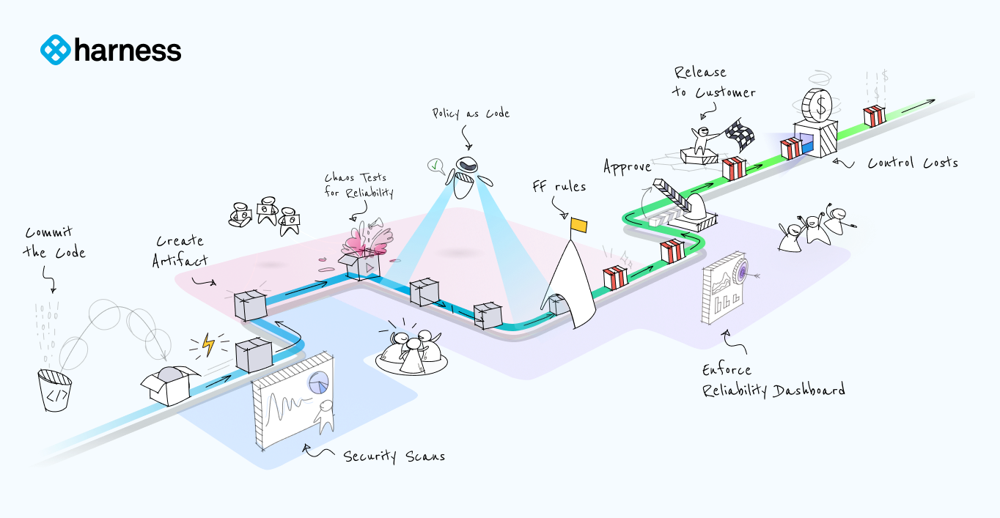
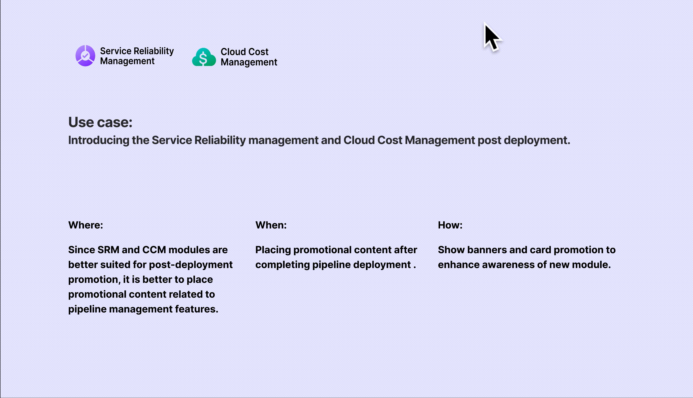
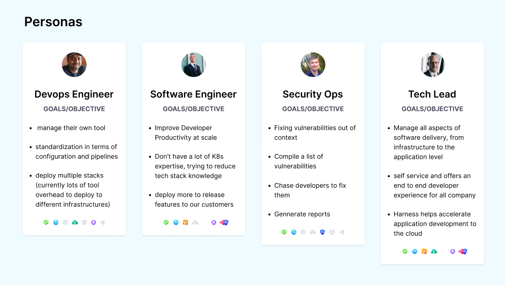
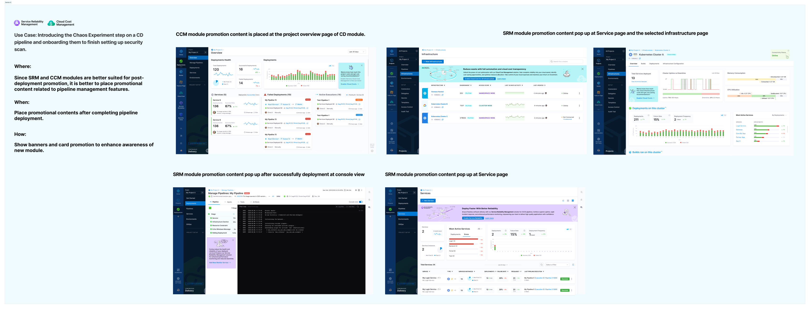
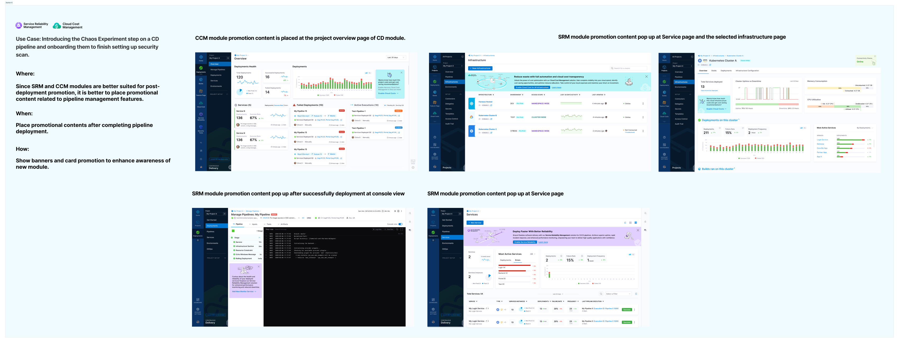

Orchestrating User Growth in the Harness PLG Journey

Project Overview
Harness is an intelligent software delivery platform that has been successful in acquiring hundreds of mid-market and enterprise customers through SLG (Sales-Led Growth) motion. With the trend shifting towards SMB self-service purchases, Harness has launched PLG (Product-Led Growth) motion last year to further support product growth.
My Role
As a platform-level UX designer responsible for driving PLG motion, I take a holistic view of all modules and identify opportunities to promote them. With an ambitious activation goal of 35% for each module, I collaborate closely with module designers to identify touchpoints in the user journey where each module can be introduced and activated along the pipeline. By fostering collaboration between different teams, I help drive sustained growth for the platform, achieving in a 20%-25% increase in module activation across the board.
Time Period
8 Months
Impact
- Established a cross-functional design growth strategy to increase the conversion and adoption rates of new modules beyond CI/CD.
- Delivered onboarding workflow and promotion content design patterns.
- Fostered a collaborative team culture for the product.
- Expanded the impact to all modules of the Harness platform.
Challenge
My design challenge is balancing growth and user experience in PLG motions. We want to achieve growth and profitability through strategies like freemium models, while ensuring a positive and engaging user experience. I need to figure out when, where, what, and how to introduce each module to let users gain value from them.
Strategy
Utilize the CI/CD pipeline as the central hub to unleash the full potential of all other modules
As part of our efforts to foster a culture of collaboration for sustained growth, we have focused on using the CI/CD pipeline as the central hub for all DevOps activities.
Foster a collaborative culture for sustained growth
Continuous Integration and Continuous Deployment (CI/CD) demands coordination among diverse roles and teams to achieve smooth code integration and deployment. Proactively encouraging collaboration at the right time can unlock the value of related modules.
Solution
To foster a culture of collaboration for sustained growth with the CI/CD pipeline as the central hub, we conducted experiments to simplify the sharing process and observed a corresponding increase in module activations. To enhance the user experience further, we redesigned the platform onboarding landing page using the JBD framework. Our task-based options reduce the complexity of selecting from more than 10 modules and enable users to easily discover and activate the potential of all available modules.
Option one

Option two

Option three

SRM module+CCM module
Account-level overview:module promotion

Account-level overview: software maturity levels

Process
Approaching the problem
The design problem is that despite 80% of users choosing the CI/CD module after sign-up, other modules like cloud cost management, service reliability management, and security testing have activation rates below 5%. This indicates a lack of platform-level growth strategy for promoting modules with lower activation rates.
Optimizing Activation Funnels
In order to engage all stakeholders with understanding the gap and optimize activation funnels for each module, I map out the workflow with the typical personas from sign up to the first pipeline run successfully to figure out touch points for promoting other modules.


Implement experiments
One of focal point of debate among stakeholders was about the growth strategy. Funnel-based or loop-based? I used the following experiment framework to validate whether the combination of funnel-based and loop-based growth strategies can work for increase of activation for designated modules.
One area is focusing on leveraging CI/CD modules to onboarding users and promoting other relevant modules to establish a reliable and secure pipeline. Another area is focusing on encouraging users to share after they gain the value of the products.

Experiment Iteration Workflow

 

Test
In order to validate whether this growth strategy with the promotion contents can increase the related module awareness and ultimately improve conversion rate, I conducted A/B test for those four typical use cases, at the same time I kept track of adoption rate of each new module to see if the encouraging collaboration prompt works.


Takeaway from the results
- Based on A/B test results, all types of promotional content improve conversion rates, with varying effects. Users are more likely to try new modules after successful deployment. When promoting SRM and CCM post-deployment, users tend to prioritize monitoring service reliability and enabling cloud cost management while reviewing the deployment health and service.
- Users are more likely to invite collaborators after successfully completing tasks, such as running security scans or chaos experiments, than when something goes wrong.
- Hotjar data shows that 80% of users choose the sample pipeline to start, which shortens the CI/CD onboarding process.